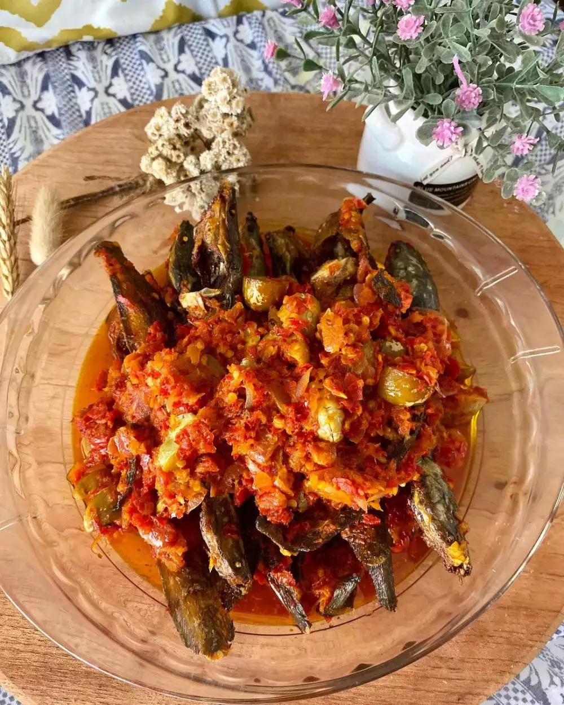

Goreng Lele Jengkol Balado

Bahan
- 10 ekor lele kecil
- 11 buah jengkol (potong 2 dan digoreng)
- 2 sdt bawang putih halus (untuk bumbu lele)
- 1 buah jeruk nipis (untuk bumbu lele)
- Garam secukupnya
- Minyak untuk menggoreng
- 200-250 gr cabai merah
- 10 siung bawang merah
- 1-2 siung bawang putih (tergantung ukuran bawang putihnya)
- 1 buah tomat
- 1 potong kecil jeruk nipis (diperas saat cabai dimasak)
Cara Membuat
- Panaskan minyak lalu goreng jengkol dan sisihkan, lalu goreng lele setelah lele matang, sisihkan.
- Panaskan kembali minyak lalu masukkan cabai yang sudah digiling (cabai, bawang merah, bawang putih, dan tomat diulek) aduk perlahan dan api kompornya kecil saja.
- Masukkan sepotong perasan jeruk nipis dan aduk kembali hingga cabainya matang.
- Pastikan cabai benar-benar matang, koreksi rasa lalu matikan kompor. Setelah itu masukkan lele dan jengkol aduk hingga cabai merata mengenai lele dan jengkol.